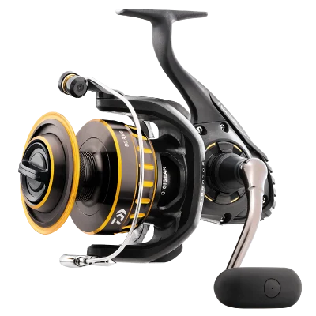

ReelCalc Reel Setup Guide
Daiwa BG 3500 Line Capacity & Reel Setup Guide
The Daiwa BG 3500 (BG3500) is a 3500-size spinning reel suited to larger bass, pike, catfish, and light saltwater. ALUMINIUM BODY uses a rigid aluminum housing to limit flex under load, while DIGIGEAR uses digitally designed gearing for smoother power transfer. Its published 10 lb / 240 yard capacity baseline leaves room for working line and leader, while the 38.5-inch pickup supports quick line control around moving fish.